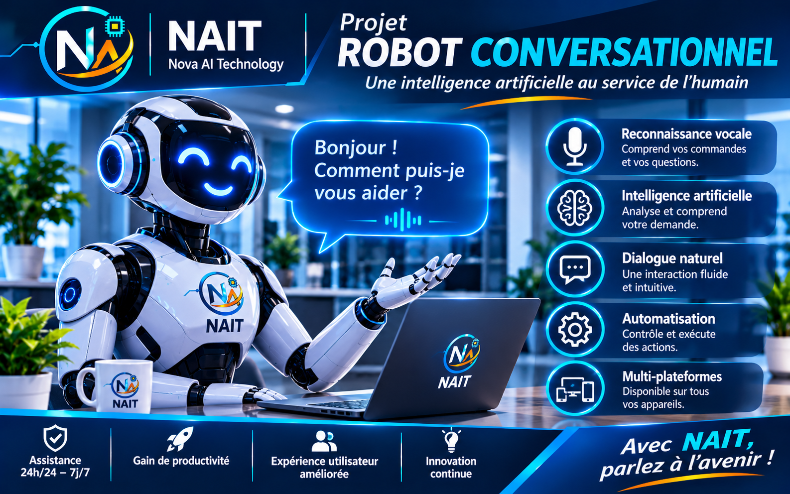
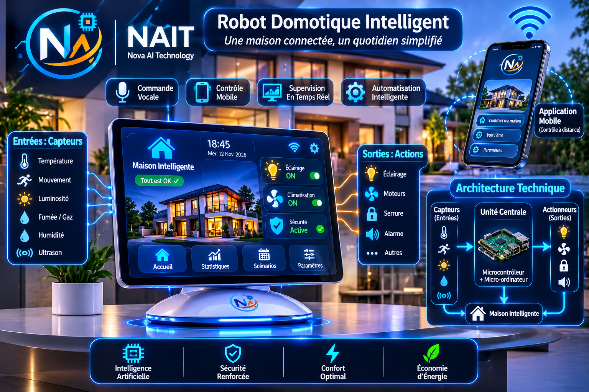

PROJET 01 · ROBOTIQUE & DOMOTIQUE INTELLIGENTE
Robot domotique intelligent
Une nouvelle manière d'interagir avec son habitat : communiquer avec sa maison, superviser ses équipements et piloter intelligemment son environnement.

Présentation du projet
Le robot domotique de Nova AI Technology est un système intelligent conçu pour centraliser le contrôle et l'automatisation des équipements d'une habitation.
Grâce à l'interaction vocale et à une interface mobile, l'utilisateur pourra communiquer avec le système, transmettre des commandes et contrôler différents équipements électriques, électroniques et mécaniques de sa maison.
Un écran de supervision permettra également de visualiser en temps réel l'état des équipements et le comportement du système domotique.
Fonctionnalités envisagées
- Interaction conversationnelle par la voix
- Commande et supervision depuis un smartphone
- Visualisation en temps réel sur écran
- Contrôle des équipements domestiques
- Gestion des capteurs et des actionneurs
- Automatisation intelligente de l'habitat
Technologies envisagées
- Microcontrôleurs et systèmes embarqués
- Micro-ordinateur embarqué
- Communication Wi-Fi
- Capteurs et modules électroniques
- Relais et systèmes de commande
- Intelligence artificielle
CONCEPTION & INGÉNIERIE
Architecture du système NAIT
Une organisation intégrée associant interface de supervision, électronique embarquée, capteurs, actionneurs et équipements connectés.

Vision du système
Le robot agit comme un centre de contrôle intelligent capable de communiquer avec l'utilisateur et de coordonner les équipements connectés de la maison.
🎤 Voix
Comprendre les commandes vocales et dialoguer avec l'utilisateur.
📱 Mobile
Contrôler la maison depuis une application smartphone.
🖥️ Supervision
Afficher en temps réel l'état des équipements domestiques.
⚡ Automatisation
Déclencher des actions intelligentes selon les besoins de l'habitation.
Objectif du projet
Concevoir un assistant robotique domotique capable de rendre l'habitat plus intelligent, interactif et autonome, en réunissant commande vocale, contrôle mobile, supervision visuelle et automatisation des équipements domestiques.